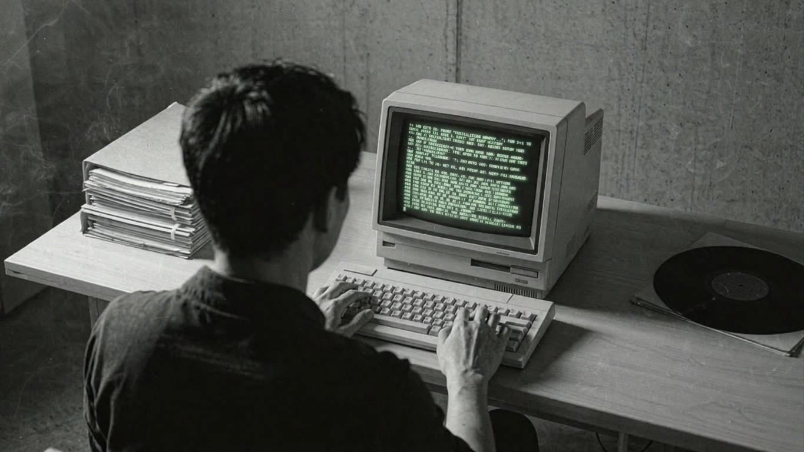

我是 Yuanyang，一名资本市场律师，base 上海，执业领域主要为香港以及美国 IPO，以 18A 生物科技、18C 硬科技为主。复旦法学学士、交大法学硕士，在阿姆斯特丹大学交换过。中文和英文可以作为工作语言。
下班以后热衷于和 AI 打交道：这个站上的三个工具——FateLens 和两个小工具——都是利用 AI 做出来的。FateLens 是八字和紫微排盘应用，起因是我一直喜欢传统的周易和命理学，该应用现在已经上线 FateLens 官网。音乐是我的另一个爱好，尤其偏爱民谣和灵动的音乐。
